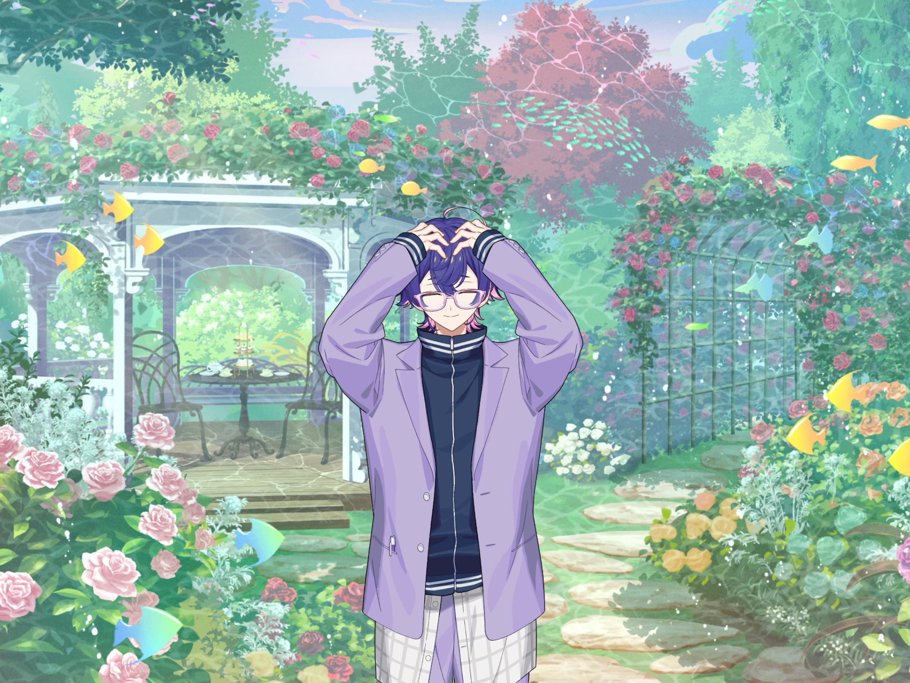
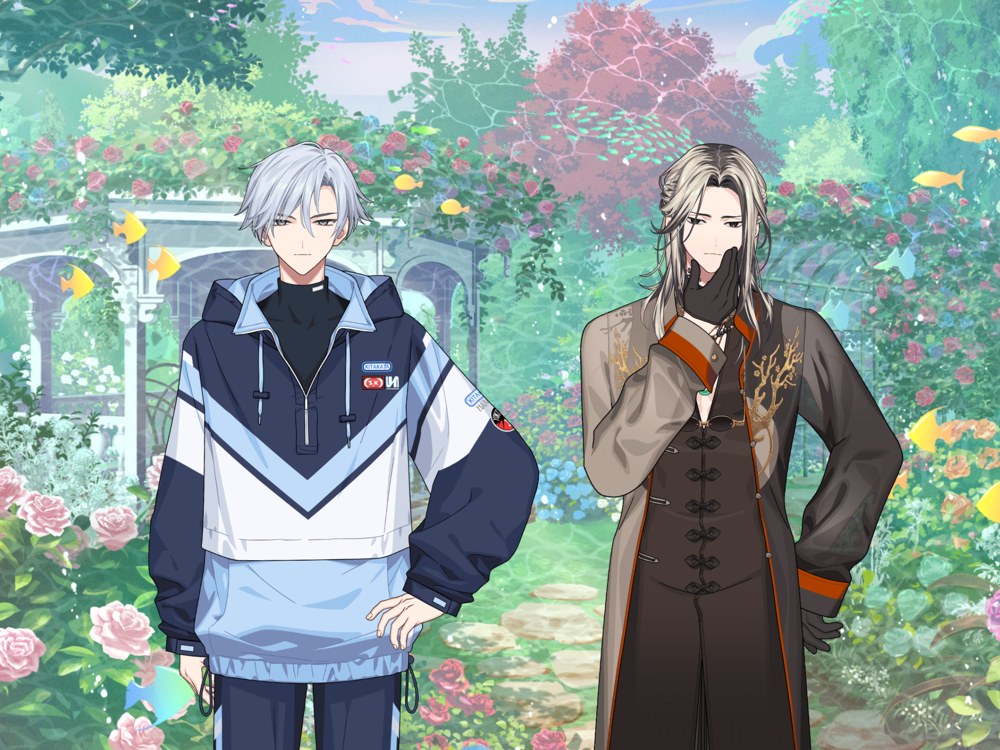
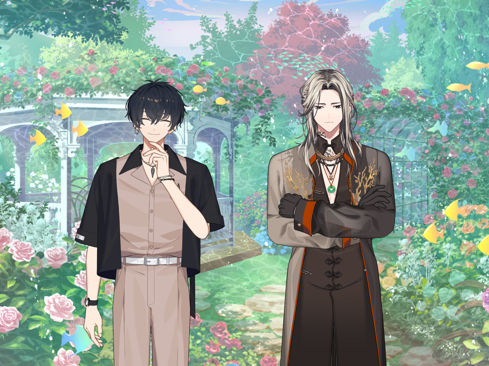
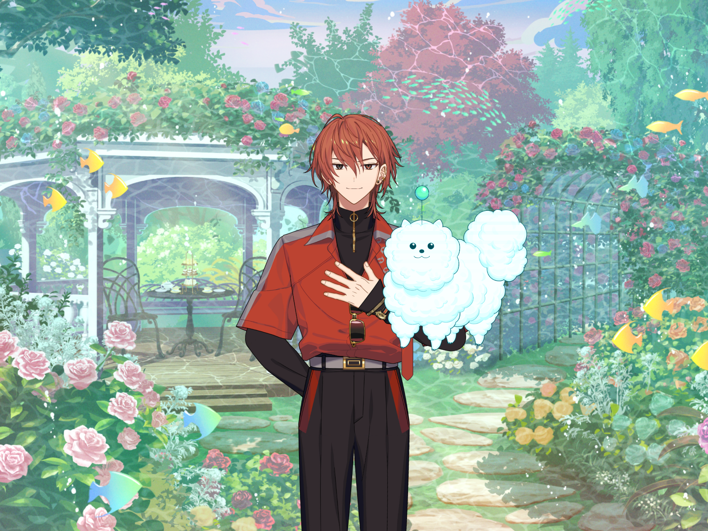
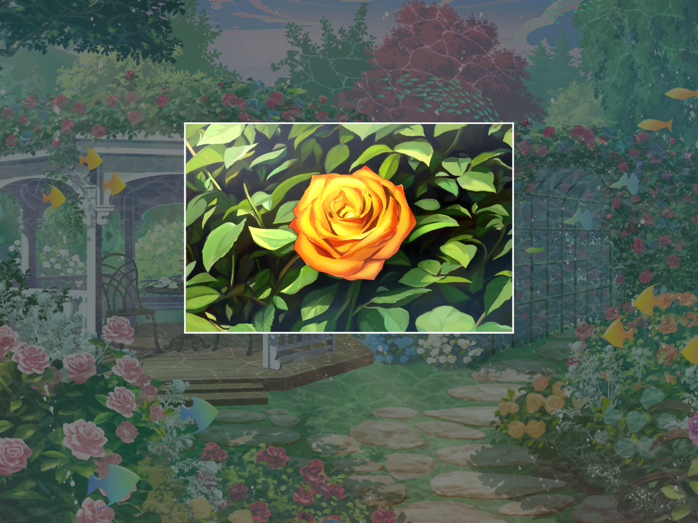
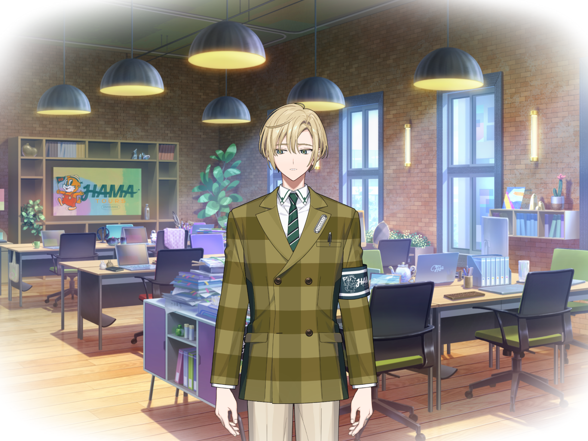
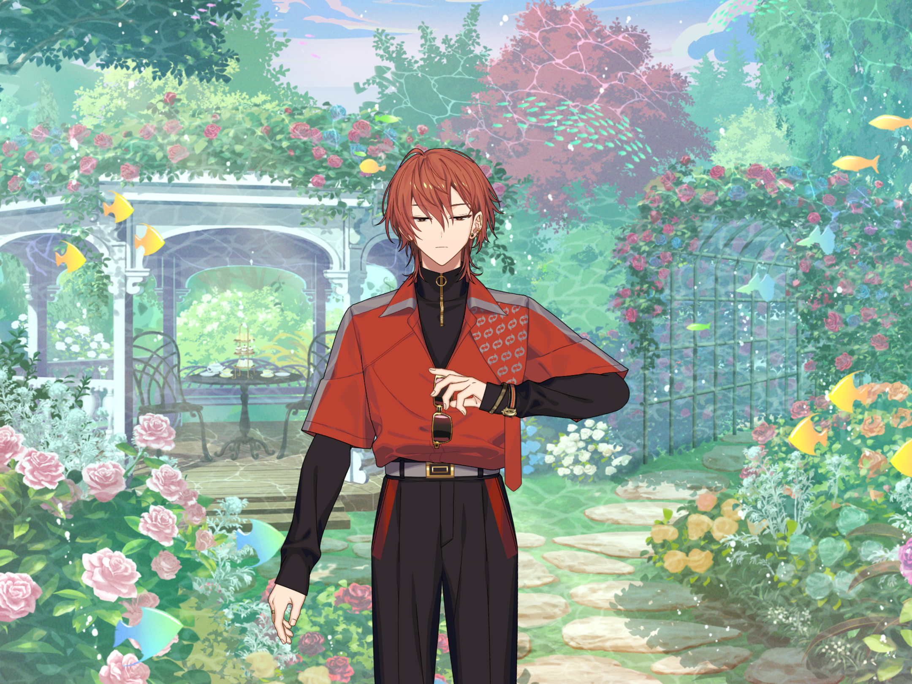

— ДН-зона в mahorova —


Кафка
Ось яка ДН-зона Ренґи... Це геть дивовижний трояндовий сад, правда, шефе?

Каеде
Ага, ще й пахне чудово…


Ячійо
Вдииииииих, хааааа~~~... Це надто висококласне повітря, простолюдинам ним не можна дихати... І усюди, куди не глянь, квіти... Це рай?

Ліґван
(Це місце... створене за зразком саду пані Рейки?)

Юкікадзе
Ліґване? Що таке? Про що задумався?

Ліґван
... Нічого.

Тен
Мені здається, ти думав про якусь панну~.

Ліґван
Прибережи свої нетактовні коментарі.
Кафка
Ви двоє, не сваріться. Ми сьогодні тут гості, тож не слід створювати проблем “організатору”.
——


Ренґа
Вітаю всіх! Це “справжній” сад, створений мною особисто. Тут ви можете водночас побачити 300 видів троянд, які квітнуть у різні пори року.
Голограма Шюмая
Ваф-ваф!
Ренґа
А якщо втомитеся під час прогулянки, то можете насолодитися фірмовими солодощами та чаєм родини Нішідзоно, тож не поспішайте й досліджуйте досхочу!
Затятий фан Ренґи
Ахх, одного лише його вітання достатньо, щоб убити мене від щастя... А Ренґа й Шюмай нас проводять! Я лишаюся навічно, можете тут і поховати~!
——
Каеде
Схоже, фанатам весело. А отам скільки народу! І—
——
Похила фанатка троянд
... Ох? Ця маленька зірочка – теж троянда? Така маленька й мила.
Ренґа
Це... мініатюрний різновид троянди. Помаранчева всередині й рожева на кінцях. Красива, так?
Дитина, що прийшла на святкування
Чуєш, чуєш, а як щодо цих квітів? Як вимовляється їхня назва? Гарди?...
Ренґа
Кардинал де Рішельє. Це найстаріший фіолетовий вид!
——
Каеде
(Ренґа дивиться на таблички й намагається пояснити гостям...)
Тен
Схоже, наш іменинник плідно працює~.
Кафка
Ренґа ніби подорослішав. Він вкладає серце в надання найкращої гостинності всім гостям.
Каеде
Ага!... Добренько, нумо теж пройдемося садом!
——
Каеде
(Вау, який чарівний краєвид... Мати змогу присісти тут після прогулянки справді розслабляє.)
Ренґа
Як тобі, шефе? Весело?
Каеде
Ренґо! Гарно попрацював. І так, я розважаюся! Пити післяобідній чай в оточенні троянд, як ось тут, дає мені відчуття, ніби я знаменитість.
Ренґа
(То це “післяобідній чай”, а не “попівденний”. Весь час казав не так... Треба бути уважнішим.) Скажи, він створений за зразком особливого по... післяобіднього чаю родини Нішідзоно! Насолоджуйся атмосферою знаменитостей.
Каеде
Ага!
Ренґа
... Ох, твоя чашка пуста. Давай наллю.
Каеде
Га? Та ні, все гаразд, я й сам можу.
Ренґа
Це теж прояв гостинності, тож дозволь мені попіклуватися. Ем... Наш дворецький, здається, робив так...
*Ренґа наливає чай*
Ренґа
... Добре, вийшло не розлити ні краплі! Ось, насолоджуйся!
Каеде
Дякую, звісно! Цей сад справді захоплює дух. Я ніколи раніше не бачив такого красивого.
Ренґа
Дякую, це найкращий комплімент. Але знаєш, бабусин справжній сад ще кращий. Одного дня я зроблю сад родини Нішідзоно таким самим... Ти будеш першим, кому я покажу його готовим, тож чекай із нетерпінням, шефе!
Каеде
Мгм, не дочекаюся. Я вірю, що ти зможеш, Ренґо.
Ренґа
Ага! (... Гм?)

Ренґа
(Ці золоті троянди за шефом... Це ж бабусині Золоті Цеглини? Але вони ж...)
— Початок спогаду —


Наюкі
Прошу вибачення, Нішідзоно. Це щодо “ДН-події у mahorova”. Йдеться про показ Золотої Цеглини. Мені сказали, що важко буде повністю відтворити її, оскільки цей вид рідкісний і цвіте тільки у вашому саду. Я зробив усе, що міг, та це поза моїми можливостями. Мені дуже шкода.
— Кінець спогаду —
Ренґа
(Вони не мали бути тут, тож чому...)
???
— Ренґо

Ренґа
!...
Каеде
Ренґо? Що сталося?
Ренґа
... Ах, це... нічого. (Золота троянда пропала. Невже це була лише моя уява? Але є відчуття, що бабуся стежить за мною.) ... Бабусю, відтепер я — (продовжу йти вперед, до місця, де зможу сяяти.)